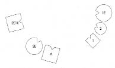
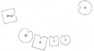

FRANK Boşanmam konusunda bir soru daha geldi aklıma. Dizimlerden birinde babayı temsil ederken, Brigitte’de olduğu gibi, çocukların yerinin her zaman babanın yanı olduğu dikkatimi çekti. Belki bunun benim için de bir anlamı vardır?
HELLINGER Hayır, bunun senin çocuklarınla ilişkinde bir önemi yok. Yalnızca dizimi yapılan durumda böyle olması söz konusuydu. Senin durumunda ne olduğunu bilmiyoruz. Ama eğer araştırmak istiyorsan aileni dizebilirsin.
FRANK Dizmek isterim.
HELLINGER O zaman hemen yap. Biraz zamanımız var hâlâ.
FRANK Ayrıldığım eşim, ben, iki çocuğum ve birlikte olduğum, buraya da benimle gelen Dagmar var.
HELLINGER Aranızda daha önceden evli olan var mı?
FRANK Dagmar evliydi.
HELLINGER Onun kocasını da alacağız.
1. Resim

A Adam (=Frank)
1E İlk eşi, 1-2’nin annesi
1 İlk çocuk, oğul
2 İkinci çocuk, kız
2E Evli olmadığı ikinci eşi (=Dagmar)
2E1Kİkinci eşin ayrıldığı kocası
HELLINGER Adam nasıl?
ADAM Şimdiki eşim yanıma geldiğinde içim ısındı. Biraz çocuklarımı özlüyorum.
HELLINGER İlk eş nasıl?
İLK EŞ Bilemiyorum.
İLK ÇOCUK Burada, durduğum yerde babayla aramda hiçbir temas yok. Babama doğru hareket edecek olursam annemle de teması kaybedeceğimi hissediyorum.
HELLINGER Nasıl olacağını görmek için babana yaklaş.
Oğul babanın yanına geçer.
İLK ÇOCUK Bu daha iyi. Böyle annemle de daha fazla temas halindeyim.
İKİNCİ ÇOCUK Burada iyiyim. Ama kendi başıma bir şeyler yapmak istiyorum.
İLK EŞ Gözlerime inanamıyorum.
HELLINGER Kıza Erkek kardeşinin yanına geç!
İlk eşe Dışa doğru dön! Böyle nasıl?
İLK EŞ İyi.
ADAM Bu benim için de çok iyi.
HELLINGER İlk eşe Öne doğru bir adım daha at! Böyle nasıl?
İLK EŞ İyi.
İKİNCİ EŞİN İLK KOCASI Bütün bu insanlarla bir ilgim yok. Ama ilk eşime doğru hâlâ gerilim hissediyorum.
İkinci eş güler. Hellinger resmi değiştirir.
2. Resim

HELLINGER Frank ve Dagmar’a Şimdi dizimdeki yerlerinizi alın.
Kıza Orada iyi misin?
İKİNCİ ÇOCUK İyiyim ama içimde buradaki diğer kadına karşı biraz öfke olduğunu düşünüyorum.
HELLINGER Tabii, elbette! Onun karşısında anneni temsil edeceksin.
İLK ÇOCUK Onu ben de özlüyorum.
İLK EŞ Ben şimdi neler olduğunu da merak ediyordum. Yeniden aileden yana döner.
HELLINGER Aileyi böyle uzaktan görmek nasıl bir şey?
İLK EŞ Daha bütün.
FRANK Ağzım açık kaldı.
HELLINGER Bu yalın ve açık bir çözüm. -Tamam, bu kadar.
FRANK Yerine geçip oturduktan sonra Toparlayamıyorum. Birkaç nokta şimşek gibi çaktı zihnimde.
HELLINGER Yalnızca sevin buna! Sevinç duyman bütünüyle yeterli.
FRANK Kendimi güvensiz hissediyorum.
HELLINGER Sen de güvensizce sevinç duy o zaman. -Kimi zaman içinden saç teli çıkana dek çorbanın tadına varamayız. Saçın kaşığa gelmemesine dikkat edebilir, yine de çorbayı silip süpürebiliriz.
Tamam, sende yaşanan hep aynı. Mutluluk korku veriyor. Ve mutluluk sorumluluk getiriyor.
FRANK Sorumluluk üstlenmeden önce bunu açığa kavuşturmam gerektiğini düşünüyorum.
HELLINGER Durum açık, karın kendi ülkesi ve sistemine geri dönüyor, çocuklarsa seninle kalıyor. Bunu görmek onun için son derece hafifleticiydi.
FRANK Ben kendimi her zaman suçlu hissettim.
HELLINGER Bunu görmek benim için de rahatlatıcıydı. Senin için sevindim. Burada suçtan söz etmemize hiç gerek yok. Söz konusu olan dinamik. Bu şekilde gelişiyor ve böylesi de doğru.
Gruba Pekâlâ, bugünlük bu kadar.